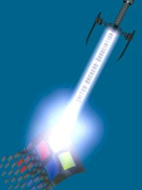

中午看到一個片的結尾，梅爾吉勃遜演的，內容好像是有個人被冷凍個五十年解凍。
結尾是感人的，那是五十年過去也不會忘記對方， 中間不管經歷甚麼事都還存在心中的愛。
讓人感動的愛是互相、相知相惜且長久的。在現下的我行我素，追求近利的風氣中， 長久仍然是個不變且好用的判斷標準。追求長久，但是未必能夠， 這就是命運讓人無法掌控之處。
不過不知道片名是啥....@_@ HBO 上播的。 
圈叉!!竟然被不認得的鄰居叫去修電腦。還一直凹我去灌98，拜託∼ 就算當我是低下的維修人員好了，那也得收服務費的勒 （且依照效率以及診斷正確率還有復元成功率來說，我必需收雙倍的價錢）!! 所謂『幫忙』根本是免錢又好用的『服務』， 我就是不爽在他們貪小便宜貪到我頭上這點!!
怎麼我生下來老是被人利用....
圖案來自United Hackers Association （駭客聯合協會），插得好!!死微軟!!